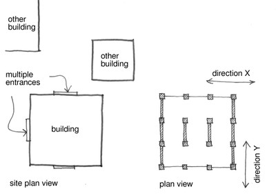

Unspecified direction [D99]
Use this attribute if the building does not have a façade that is parallel to a street. Choose any other façade and define Direction X parallel to it. Direction Y will be perpendicular (orthogonal) to Direction X. This includes buildings that are not located next to a street or their orientation is not parallel to the street. It also applies to any building where information about its direction is unavailable

Unspecified Direction - when street cannot be identified

Unspecified Direction - case of a building with a curved plan shape